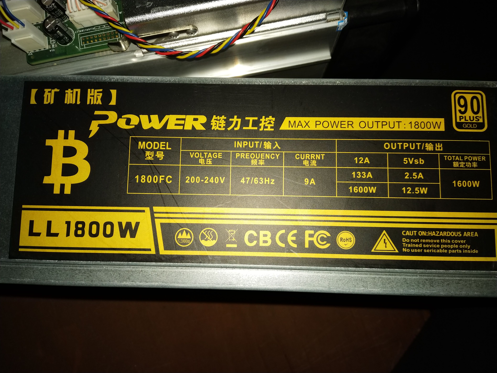
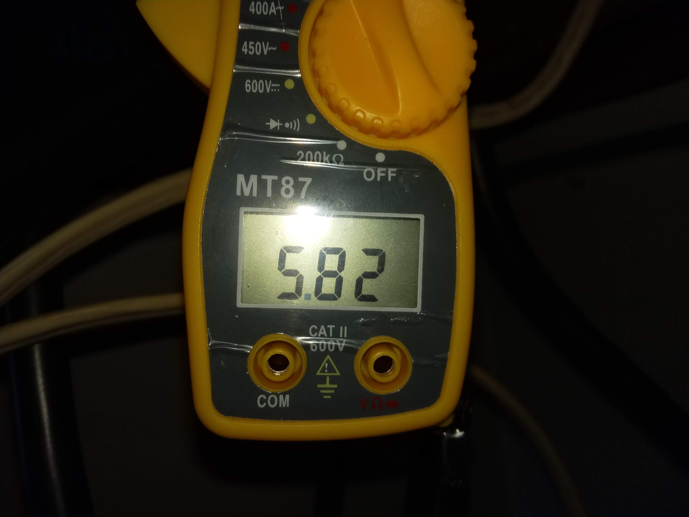

2019.09.17
Back to christrees.com
Cisco Catalyst3560G
Reset
- Nothing connected
- Finish Post - SYST LED remains green
- Press and hold Mode for 3 sec - LED's above mode turn green
- Release Mode - LED should stay green
- Connect DHCP PC to any port, wait 30 sec
- Go to: http://10.0.0.1
- Password: cisco (Username is ignored)
- Setup Management IF, you must change default password
S3 Antminer
Reset
- Power Off
- hold down the IP Reporter and don’t release it. At the same time, power on the mine again. Releasing the IP Reporter after 5 seconds
- machine will automatically restore factory settings.
Resources
- Reset document link
- Network issues link
- bitmain github repo link
- ASICBoost firmware link
Pi
Notes
- sudo nano /etc/dhcpcd.conf link
- pi - What#Time
antminer notes
- App Manual link
- Bulk Management link
- AP Multiminer link
- Ant Proxy link
- AP Connectivity link
- Miner Tool App link
- cat9bit-gmail antpool
link
Test data
- title
 xxx
xxx
- title
-  xxx
- title
-  xxx
{kind=link}
{kind=link}